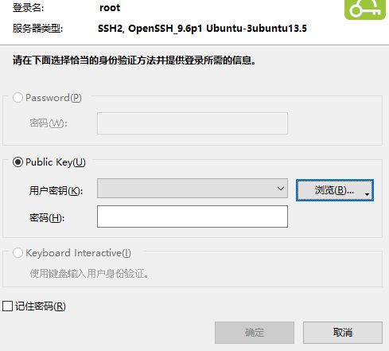

本实例经过2次迁移，第1次迁移时，本博客也不存在，而且我也懒得写技术博客。当时本站只有20G大小，没有任何邮件功能，也没有全文搜索，字数限制和媒体限制也跟官方的一样小，富文本也不需要（不需要引用原文），置顶也没有超过10条。
本站的根本目的就是保证我不会因为被人恶意封号导致在网络上社会性死亡，就跟吃屎喝尿求生存没什么两样。
现在本站有了很多魔改功能（我自己不用也可以分享给象友们用，只要你们把我的代码抄去），配置了邮件功能以后，还邀请了几个象友来注册。所以迁移起来就有点讲究了，步骤也跟官方文档大相径庭。如果你们要用我的代码从新部署你们自己的实例的话，本文也有很大参考价值。
面向的读者
我自己。如果你在Linux系统运维中，遇到难题，通过Google搜索找到这篇进行参考，能给你提供一些帮助，那再好不过了。😚
需要的基础知识
掌握越多Linux技巧越好，没有的话真的愿意学习就行。
前提条件
提前买好VPS。如果你要全新部署实例，申请域名和托管Cloudflare也建议提早进行，因为中国的域名备案要花8天（我不是中国域名，也没备案）。提早准备VPS和域名的时候，千万不要炫耀，发个推特/朋友圈，图里还带IP和域名的，说“看这是我的新网站”。
不然你实例上线那天被人DDOS，就欲哭无泪了。
准备工作
由于我的实例没有使用对象存储，全部文件都在本地，而新旧服务器都有400GB的硬盘，非常的划算，所以需要迁移媒体文件，因此服务器的迁移要多花好几个小时。
迁移媒体文件之前，首先要进行瘦身，第一步要删除7天以前的外站媒体文件。
在进行以下操作前，首先要切换到mastodon用户，进入live文件夹，以下本文不再赘述。操作如下：
1 | su - mastodon |
删除媒体文件
1 | bin/tootctl media remove |
删除未被引用的媒体文件
1 | bin/tootctl media remove-orphans |
💡 温馨提醒： 以上操作耗时极长
进行耗时极长的操作，或者需要后台运行的操作，除了no hup以外，还可以使用tmux。
几个简单的tmux操作
进入tmux
1 | tmux |
终止tmux会话
在tmux界面运行
1 | exit |
脱离tmux
在tmux界面下，按下Ctrl+B，再按下D。
检查tmux有多少会话
1 | tmux ls |
进入第一个tmux会话
1 | tmux attach |
tmux操作还有很多，以上这些属于最常用的，够用了，不够用就搜索一下，或者查看阮一峰的教程。我只领你入门，靠这几招平A，助你在这个行业立足😀。
💡说句题外话，systemd也可以用于程序后台运行，但可能有些大材小用了。如果需要断电重启后继续运行，请用它。
此外最好还要发一下公告，让用户做好断开服务的准备。
准备新服务器
如果你用的是vultr和digitalocean，我建议你在有时间部署时当天就买，不用提前。虽然安全方面比我这好，但是这种服务器很贵，不划算。如果你（为了节约成本，为了优惠）提前买了服务器，那么你的服务器可能会被黑客不停地扫描（我本来还想出一个brutespray的教程😈，以后有空再说吧，关注提篮桥tag），直到被破解变成肉鸡。不仅是你的损失，你对自己资产和隐私的疏忽和漠视也是对公共安全的一大危害。所以我建议你服务器刚买，但还没来得及改密码的时候先关机，等到需要用了再直接重装系统。
更改登录方式
我们最怕的就是我们的ssh被别人登录了。这也是我们接触服务器操作系统的唯一界面。有两种办法在一定程度上避免被别人强行登录：
- 禁止密码登录，改用非对称加密或TOTP登录。
- 修改ssh端口，不再使用22端口
这两种方法最好都用。非对称加密的原理我不再赘述，自己去搜索去学习。别人要想破解RSA2048加密，只有试个至少2^2048遍才能登进去了吧？
修改ssh端口其实也没卵用，用https://fofa.info 一下就能查出来你服务器改了什么端口。用专业工具扫描也可以轻松破解。但这对于专杀菜鸟的黑客还是相当有用的，你跟他无冤无仇，而且他知道你不是菜鸟，就不攻击你了。
禁止密码登录
在重装系统时，你直接选择ssh-key登录。各种工具都有它自己的生成密钥方式，请自己上网搜索。
- 其中XShell的密钥生成方式就是单击菜单栏
工具，再单击用户密钥管理者。根据向导生成密钥，生成期间多动鼠标，生成以后即可复制公钥。要寻找已生成密钥的公钥，双击打开这个密钥的属性，单击公钥选项卡，复制全部内容给VPS控制台。 - openssh的密钥生成方式直接使用
ssh-keygen，直接用文本编辑器打开生成的.pub文件，复制全部内容即可。
重装后的系统即可使用密钥登录。如果不能重装密钥登录，那还可以在Linux系统内设置。
- 打开
~/.ssh/authorized_keys，另起一行，直接将你的公钥复制进去即可。多个公钥的话，一行一个公钥就行。
设置完公钥后，重新登录服务器，XShell用户请注意界面

Password一定要变灰，否则黑客还是可以试出你的密码登录进去。如果是其他软件用户，则尝试输入正确密码登录服务器，如果无法使用密码登录，或者正确密码无法登录，则配置正确。
如果配置不正确，则修改配置。目前Ubuntu 24.04.1 LTS的配置方法如下：
- 进入ssh配置目录
1 | cd /etc/ssh |
- 打开ssh配置文件
1 | vim sshd_config |
- 找到
PasswordAuthentication配置，取消注释，后面的值改为no，并保存文件注意： 进行禁用密码操作时，必须用密钥登录。否则，虽然可行，但是如果发生意外，则只能进入救援系统或者重装系统！
- 重启ssh服务
1 | systemctl restart ssh |
验证是否能用密码，如果还能用密码，则重启sshd.service和ssh.socket服务。这些新旧版本的系统使用方式都各不相同！
更改端口
最新版本的 Ubuntu 24.04 LTS现已无法用sshd_config修改ssh端口。正确修改方法如下
- 进入systemd目录
1 | cd /etc/systemd/system |
ls显示目录内容，找到ssh开头的目录，进入
1 | cd ssh.service.requires/ |
- 修改
ssh.socket
1 | vim ssh.socket |
- 先添加新端口，再删除旧端口。每次更改，都必须运行一次
systemctl daemon-reload再重启ssh服务
经过验证，旧端口无法使用后即完成。
温馨提示： 先不要改掉22端口！后面用
rsync同步文件时可以少打好几次参数！
系统升级
系统内的软件有很多安全漏洞，更新到最新版本进行修复。
1 | apt update && apt upgrade -y |
分配虚拟内存
由于本实例要用ElasticSearch，所以需要分配虚拟内存
- 查看交换空间
1 | swapon --show |
如果没有虚拟内存，则继续
- 分配虚拟内存
1 | fallocate -l 4G /swapfile |
- 设置文件权限
1 | chmod 600 /swapfile |
- 格式化虚拟内存
1 | mkswap /swapfile |
- 挂载虚拟内存
1 | swapon /swapfile |
- 设置开机挂载虚拟内存
1 | vim /etc/fstab |
添加一行
1 | /swapfile none swap defaults 0 0 |
安装fail2ban
直接参考官方文档进行操作
- 直接用包管理器安装
1 | apt install fail2ban |
- 直接编辑或新建
/etc/fail2ban/jail.local
插入以下内容
1 | [DEFAULT] |
其中port改为你的ssh端口，邮箱改为你平时用的邮箱（如果你不想接收黑客入侵提醒，可不改，毕竟天天开着brutespray这种工具的虫豸实在是太多了🤬）
完成后，重启fail2ban进程
1 | systemctl restart fail2ban |
现在，你的fail2ban已经可以阻止密码/密钥爆破了。其实禁止密码后，就已经很安全了，但还是建议安装fail2ban。验证方式就是，你挂上你最不常用的梯子出口节点，你先用错误的登录方式登录5遍，第6遍错误尝试时会被拒绝得特别快。再用正确方式登录，发现登录不了了，这就是fail2ban生效了。
接下来可以配置fail2ban邮件提醒，可以在有人被禁和程序重启时发出邮件进行警告。当然也可以不配置。
fail2ban配置邮件提醒
fail2ban默认是不发送邮件的。需要修改/etc/fail2ban/jail.conf内的配置。
- 打开该文件，找到
action = %(action_)s这一行，把action_改为action_mw。这样在ban可疑IP时会发送邮件了。 - 找到
mta = sendmail，把值改为mail。这样它会使用mail命令通过系统发送邮件。（这时mail还不能发送邮件，后面讲如何配置，内容较为复杂我没义务包教包会，倒是你有义务交版权费） - 修改
destemail为你的常用邮箱（安全起见，也可以发到不常用邮箱，再设置自动转发）。 - 修改
sender为root@<你的主机名>。
这个值，我要解释一下远古时期（上个世纪）邮箱发明时的原理了。最早没有什么网易邮箱、谷歌邮箱、微软邮箱，网络上每台电脑都能当邮箱服务器，既能收又能发，不用配什么POP3和SMTP。邮箱地址@前面的字符是用户名，就是你在这台电脑上的用户名；邮箱地址@后面的是主机名，就是你这台电脑在网络上的名称。你要发邮件给小明，你就直接登录你单位唯一那台电脑，那么发件人就是<你的名字>@<你的电脑名称>。邮件发送时，电脑解析出收件人的主机名，把你的邮件发到小明单位的电脑上，小明一登录就能收到你的邮件。
等我讲到配置postfix时会进一步解释。
修改完后重启fail2ban。
fail2ban配置重启提醒
打开/etc/fail2ban/action.d/mail-whois.conf，修改最后一行dest，地址改为你的常用邮箱。
改完重启fail2ban生效。
postfix的安装与配置
这一条应该在前面写，但是考虑到邮件提醒必要性不大，同时还会打断fail2ban的讲解。
在全新的Ubuntu系统中，试图使用mail命令发送邮件，它会提醒你安装mailutils。使用apt install mailutils，它会自动安装postfix。邮件发送似乎只有postfix好用，我在第1次迁移实例时已经踩过这个坑了。
- 邮箱服务的选用
如果你不怕泄露隐私,可以直接用网易邮箱来给长毛象实例使用。但缺点就是smtp密码有效期只有半年，半年后就得重新设置，否则可能导致错过重要邮件。
现在对我来说，最好的邮箱服务就是飞书国际版。注册教程如下所示：
https://uuzi.net/lark-international-smtp-email-sending-guide/
亚马逊、sendgrid什么的都不行。
安装postfix时，它会要你选择几种模式，你选择带有Satellite的那个选项就行了。安装完成后，需要修改配置文件。进入/etc/postfix目录，首先修改main.cf文件。
强烈建议修改前进行备份
1 | cp main.cf main.cf.bak |
修改内容：
- 首先把
relayhost改为[smtp.larsuite.com]:465。方括号一律不能少，否则会出问题。 - 修改
smtp_tls_security_level，如果协议为STARTTLS,则修改为may；协议为TLS则修改为encrypt。 - 添加如下内容：
1 | # enable SASL authentication |
用简单密码来登录smtp邮箱。
修改后，执行postfix reload生效。
但此时还不能生效，如上所示，还缺generic和sasl_passwd两个文件。其中generic是本机邮箱地址（用户名@主机名）和发件人的对应关系；sasl_passwd是发件人和密码的对应关系。发件人邮箱就是你在smtp服务商（我的是飞书）。
- 首先新建
generic文件：
1 | vim generic |
- 添加如下内容：
1 | root@<我的主机名> fail2ban@dzm.pp.ua |
其中<我的主机名>和用户名就是命令提示符前的当前路径冒号前面的那段。保存后执行postmap generic，会生成一个generic.db。
- 再新建
sasl_passwd：
1 | vim sasl_passwd |
- 添加如下内容：
1 | [smtp.larksuite.com]:465 fail2ban@dzm.pp.ua:<我的密码> |
显然，是发件人：密码（真正的密码在飞书设置和修改）和服务器的对应关系。保存后还是执行postmap sasl_passwd。
- 执行
postfix reload，显示postfix/postfix-script: refreshing the Postfix mail system即为设置成功。
postfix配置的验证
配置完成后，你可以执行如下命令给自己发邮件：
1 | mail <你的邮箱> |
输入抄送人、主题后，即可输入正文。正文编辑完毕后，按下Ctrl+D组合键发送。
发送时，执行mailq即可查看邮件发送状况。没有错误提示，且几秒后再执行mailq，提示Mail queue is empty,即为发送成功。
再执行mail，如果显示没有邮件，则邮件已离开发件服务器。
失效模式：
mailq有报错：本机配置问题，本机网络问题，密码问题，账号问题等mail收到退信：违反smtp提供商的发信政策，提供商服务到期，提供商的服务未续费，接收方退信等- 都没报错：邮件被接收方拦截，请查看垃圾邮件，或者更换收件邮箱进行测试
验证fail2ban
挂梯子不常用节点，用错误方式登录5次，或重启fail2ban。有问题则排查postfix故障。
配置防火墙
此配置因VPS而异。好的提供商，自带防火墙面板。可以把ufw关掉
1 | ufw disable |
再在面板设置防火墙策略。
防火墙对于长毛象实例是很必要的，因为它可能会暴露3000端口、4000端口，甚至让黑客尽情地注入。还有数据库、ES搜索、redis等长毛象依赖服务都可能暴露端口。配好防火墙，才能让长毛象实例的进程间通信只在本机内访问。
安装nginx
安装nginx是我验证防火墙和CDN的重要方式。我直接先安装nginx
1 | apt install nginx |
安装完成后，它就会即刻启动。我直接打开防火墙端口，在浏览器访问我VPS的IP地址（所以网站上线前必须保持低调）。如果显示“Welcome to nginx！”，则说明nginx安装成功，且防火墙开放。如果无法显示，排除了nginx的问题以后，多找找防火墙的问题。默认的Linux防火墙和面板防火墙，都是随VPS不同，因人而异的。
配置仅允许cloudflare
nginx测试通畅后，由于我没面板，所以只能配置ufw。配置时还是要注意不能搞得无法登录了。
- 开启ufw
1 | ufw enable |
- 允许ssh
1 | ufw allow 22/tcp |
- 允许80
1 | ufw allow 80/tcp |
这样就能用浏览器访问VPS的IP地址了
- 在cloudflare解析并代理VPS的地址。
由于是迁移，我解析测试用的子域名到我的VPS。用https://whatsmydns.net 检查是否开启代理，再用浏览器访问我的域名。
如果是新部署的实例，你可以直接解析你的实例域名到VPS。
这时应该都能显示“Welcome to nginx”。如果不行，就在cloudflare设置规则，该域名的SSL加密设置为“灵活”。
关闭80端口
1 | ufw delete allow 80/tcp |
此时无法访问VPS的网页。
将3个脚本上传到服务器，并赋予执行权限。
add.sh
1 |
|
以上脚本会将所有cloudflare的IP地址加入ufw白名单中。
remove.sh
1 |
|
以上脚本会删除add.sh添加的一切IP。
update.sh
1 |
|
以上脚本会自动更新add.sh添加的IP。
执行
1 | ./add.sh |
就会发现IP地址已无法访问网页，但是域名可以访问网页。
部署长毛象实例
刚才已完成网络安全的配置，黑客很难对本站的IP地址和端口进行扫描了。接下来就可以正式开始迁移了。此时旧服务器仍然无需停机。
安装依赖
以下是从官网安装时，传输和防中间人攻击用的软件，用如下命令安装：
1 | apt install -y curl wget gnupg apt-transport-https lsb-release ca-certificates |
然后依照官方文档安装长毛象的依赖环境，没有如下软件，长毛象将无法运行
添加Node.js软件源
1 | curl -fsSL https://deb.nodesource.com/gpgkey/nodesource-repo.gpg.key | gpg --dearmor -o /etc/apt/keyrings/nodesource.gpg |
添加PostgreSQL软件源
1 | wget -O /usr/share/keyrings/postgresql.asc https://www.postgresql.org/media/keys/ACCC4CF8.asc |
安装全部依赖
1 | apt update |
开启corepack
1 | corepack enable |
创建mastodon用户
长毛象实例必须在自己的用户下运行
1 | adduser --disabled-password mastodon |
之前的安全设置也是防止有人登录mastodon用户摧毁你的实例。
配置PostgreSQL数据库
优化性能
登录PGTune，将你的PostgreSQL版本和VPS配置输入进去，点击Generate，复制出生成的配置信息。再找到文件/etc/postgresql/17/main/postgresql.conf（如果版本不同，则可能路径有变化，但是文件名应该不会变）。建议做好备份cp postgresql.conf postgresql.conf.bak。
我建议将文件从VPS下载到本地，用vscode改，用文件内搜索功能找到对应行，解除注释（如果有的话），进行修改。
注意： 千万不要用PGTune生成的配置覆盖整个
postgresql.conf！否则postgresql将无法启动！
修改后记得重启postgresql
1 | systemctl restart postgresql |
创建数据库用户
不论是新部署实例还是迁移实例，都要创建mastodon用户
- 进入数据库
1 | sudo -u postgres psql |
- 创建用户
1 | CREATE USER mastodon CREATEDB; |
从GitHub安装长毛象实例
切换到mastodon用户：
1 | su - mastodon |
在mastodon用户的home目录克隆我的代码
1 | git clone https://github.com/dongzhimin-xz/mastodon.git live && cd live |
再用git checkout切换到我最新提交的tag上。
安装Ruby
就在mastodon用户下执行安装ruby的命令
1 | git clone https://github.com/rbenv/rbenv.git ~/.rbenv |
以上命令我建议逐行复制执行，避免有漏错
最后安装ruby
1 | RUBY_CONFIGURE_OPTS=--with-jemalloc rbenv install |
安装长毛象依赖的Ruby和Node.js组件
逐行执行如下命令即可
1 | bundle config deployment 'true' |
开始迁移实例
完成以上步骤后，根据官方文档，直接运行RAILS_ENV=production bin/rails mastodon:setup就能部署新实例了，但我今天是要迁移
现在起，就开始迁移数据。旧实例仍然无需停机，因为我有50GB的媒体文件需要迁移。
迁移前的准备
迁移最常用的软件就是rsync，它可以让你在你的公网服务器间快速地传输文件。也可以保证本地文件备份同步，当然本文只用来在网络上传输文件。
rsync使用ssh协议进行文件传输，所以前面我建议先不要改掉ssh端口号22。所以可以通过密钥来登录。
- 首先切换到
mastodon用户 - 在旧服务器上使用
ssh-keygen生成密钥 - 将旧服务器生成的
.pub密钥下载下来 - 登录到新服务器，将前面下载的公钥复制到
/home/mastodon/.ssh/authorized_keys新加的最后一行
如果没有该文件，就把.pub结尾的文件直接上传到它的目录下，并用chown把文件所有人更改为mastodon用户。root用户也一样。在root用户下生成密钥，密钥位置在/root/.ssh目录下。
这样，旧服务器就可以用ssh登录新服务器了（迁移完成后，记得把刚才在authorized_keys下添加的删除，这样就能直接取消旧机器登录新机器的权限）
迁移媒体文件
登录旧机器，进入tmux界面。tmux的好处在于你在此界面中即使意外断线了，你刚才在界面中运行的程序仍然不会中止，而普通的ssh会话，里面的程序会随着会话中断而中断。
你在正式迁移前可以再次用
bin/tootctl media remove等命令清理一下文件进行瘦身，但从时间成本上考虑，必要性不大。迁移开始后就不要再清理文件了，以免新旧机器文件不同步。
在tmux界面中，执行如下命令开始迁移
1 | rsync -avz --progress ~/live/public/system/ mastodon@<你的新IP>:~/live/public/system/ |
<你的新IP>直接换成你的IP地址，当然也不要加尖括号。
这样它就正式开始迁移了。在此期间，你可以关掉会话去做别的事情，大约会花4小时。
一般来说，我还是建议使用对象存储，备份、恢复和迁移更加灵活省事。对于大实例来说，成本也更加划算。如果实例发生意外，这么大个文件夹都由第三方保管，也确实令人放心。
迁移完成后，旧实例该停机了。
旧实例停机
在此之前，我建议先存个快照
1 | systemctl stop mastodon-* |
完事以后，看看systemctl status，确认一些长毛象进程是否中止，不要让它再改动数据了。
也可以再用rsync -avz --progress ~/live/public/system/ mastodon@<你的新IP>:~/live/public/system/同步一下，但是还会再花掉2小时进行同步。
新实例运行后，旧实例的所有mastodon-sidekiq都应该终止并禁止开机启动，否则会导致你实例在联邦中重复访问联合。
迁移数据库
数据库是最重要的，先进行同步。
- 登录旧机器，进入
mastodon用户，直接导出数据库
1 | su - mastodon |
- 用
rsync将backup.dump传到新机器的mastodon用户目录下 - 登录新机器，切换到
mastodon用户，创建长毛象实例的数据库
1 | su - mastodon |
- 将
backup.dump恢复到数据库中
1 | pg_restore -Fc -j4 -U mastodon -n public --no-owner --role=mastodon \ |
其中，-j4是因为我VPS为4核。
迁移其他文件
.env.production也是非常重要的文件，没有它，实例就无法运行
1 | su - mastodon |
- 我的
mastodon-sidekiq文件经过自定义，所以不能使用全新的，也要进行迁移
在root用户下进行
1 | rsync -avz --progress /etc/systemd/system/mastodon-* root@<你的新IP>:/etc/systemd/system/ |
- 还有GOST文件也要迁移
1 | rsync -avz --progress /etc/systemd/system/gost.service root@<你的新IP>:/etc/systemd/system/ |
- 我的nginx文件也经过自定义，里面包括了显示用户IP地址的设置，所以也要迁移（在root用户下进行）
1 | rsync -avz --progress /etc/nginx/sites-available/ root@<你的新IP>:/etc/nginx/sites-available |
- 迁移后，别忘了在新服务器上使nginx配置生效
1 | ln -s /etc/nginx/sites-available/mastodon /etc/nginx/sites-enabled/mastodon |
先执行nginx -t如果没有报错，显示一切OK，那么就可以重启nginx服务使配置生效
迁移Redis文件
- 登录新机器，停止redis进程
1 | systemctl stop redis-server.service |
- 登录旧机器，将redis文件传入新机器
1 | redis-cli SAVE |
完事就可以启动新机器的redis了
至此，实例已迁移完毕，可以删除旧机器的公钥了。记得/root/.ssh和/home/mastodon/.ssh两个文件夹下都有。
编译新实例
1 | RAILS_ENV=production bundle exec rails assets:precompile |
等待至少30分钟，没有报错则可继续。
为了以后在维护新实例时，不用再输入RAILS_ENV=production，可在/home/mastodon/.bashrc结尾加上一行
1 | export RAILS_ENV=production |
启动新实例
重新加载systemd，启动redis和所有长毛象进程（并设置开机自启）
1 | systemctl daemon-reload |
此时，长毛象进程开始启动。在启动时，不宜允许用户进行频繁登录，所以在重新解析地址之前进行。
在启动nginx或验证nginx配置时，可能会提示缺少证书。完成以下步骤以后解决
重新解析域名
- 进入Cloudflare，修改DNS记录，修改cmx的A和AAAA记录。
- 左侧选择
SSL/TLS>概述，在此界面，先把SSL/TLS加密改为完全。在这种模式下，服务器没有证书也可以访问，以便用certbot申请证书。
Certbot申请证书
在你的新实例服务器执行以下命令
1 | certbot certonly --nginx -d cmx.dzm.pp.ua |
注意把域名替代成你自己的
这样即可申请全新证书，有效期90天。原理就是certbot在你机器上生成了一些信息，letsencrypt通过DNS解析到了CDN，CDN访问了你机器上生成的信息，传给了letsencrypt。letsencrypt依据这个认定此域名归你所有，给你颁发SSL证书。
然后登录你的网页端，能显示首页即为成功。
如果有问题，再重启一下nginx解决上述缺少证书的问题。
成功后，别忘记把Cloudflare设置改回去。
新实例网页无法正常显示
我在迁移后遇到了这个问题，曾一度把DNS切回去。解决方式如同官方文档从新安装篇所述
1 | chmod o+x /home/mastodon |
赋予mastodon用户文件夹，所有用户执行权限。
我当时也是把所有长毛象组件删了装，装了删，最后才发现是这个原因/(ㄒoㄒ)/~~
设置证书自动更新
编辑crontab
1 | crontab -e |
在最后一行添加
1 | 0 14 1 */2 * certbot renew --force-renewal |
意思是每2个月的1日服务器当地时间14:00更新证书。
避免90天后实例无法访问，需要手动登录cloudflare更改配置。
重建时间线
1 | RAILS_ENV=production ./bin/tootctl feeds build |
隐藏IP地址
前面的文章我就说过为什么要迁移了。现在直接上步骤
其中改配置文件和编辑systemd文件都可以省掉，因为这些文件都是从旧服务器迁移来的。
- 安装Cloudflare WARP
1 | curl -fsSL https://pkg.cloudflareclient.com/pubkey.gpg | sudo gpg --yes --dearmor --output /usr/share/keyrings/cloudflare-warp-archive-keyring.gpg |
- 安装GOST
1 | bash <(curl -fsSL https://github.com/go-gost/gost/raw/master/install.sh) --install |
- 迁移GOST文件以后，转发端口到Cloudflare WARP
1 | systemctl daemon-reload |
最后验证结果：开一个VPS，安装nginx，在新实例搜索框输入http://<你的VPS IP地址>。查阅VPS的nginx日志/var/log/nginx/access.log，是否是cloudflare的IP。如果是即成功。
部署全文搜索
新服务器，代码魔改部分省略，因为都是从我GitHub仓库下载的代码。
安装依赖
1 | apt install openjdk-17-jre-headless |
添加软件源
1 | wget -O /usr/share/keyrings/elasticsearch.asc https://artifacts.elastic.co/GPG-KEY-elasticsearch |
安装ES
1 | apt update |
启动ES
1 | systemctl daemon-reload |
分配内存
添加配置文件/etc/elasticsearch/jvm.options.d/ram.options
内容如下
1 | # Xms represents the initial size of total heap space |
重启elasticsearch
添加mastodon专用账号
迁移前我一直使用elastic管理员账号来使用搜索功能，其实这是不安全的。首先要修改配置文件/etc/elasticsearch/elasticsearch.yml。
文件中，xpack.security.enabled值必须保持为true，否则无法使用密码。xpack.security.http.ssl的enabled改为false，否则无法用curl访问，长毛象可能也无法访问ES。
- 首先重置elastic密码
1 | /usr/share/elasticsearch/bin/elasticsearch-reset-password -u elastic -i |
这条命令可以让你手动输入密码。
重置密码后，可以用如下命令验证密码是否正确：
1 | curl -u elastic 127.0.0.1:9200 |
输入密码，如果返回如下结果
1 | { |
则密码正确
若密码错误，则会显示：
1 | {"error":{"root_cause":[{"type":"security_exception","reason":"unable to authenticate user [elastic] for REST request [/]","header":{"WWW-Authenticate":["Basic realm=\"security\" charset=\"UTF-8\"","ApiKey"]}}],"type":"security_exception","reason":"unable to authenticate user [elastic] for REST request [/]","header":{"WWW-Authenticate":["Basic realm=\"security\" charset=\"UTF-8\"","ApiKey"]}},"status":401} |
- 创建角色
mastodon_full_access
执行如下命令
1 | curl -X POST -u elastic "localhost:9200/_security/role/mastodon_full_access?pretty" -H 'Content-Type: application/json' -d' |
返回true则成功
- 创建用户
mastodon
1 | curl -X POST -u elastic "localhost:9200/_security/user/mastodon?pretty" -H 'Content-Type: application/json' -d' |
其中l0ng-r4nd0m-p@ssw0rd替换为配置文件内的密码，如果首次创建，则可以使用
1 | /usr/share/elasticsearch/bin/elasticsearch-reset-password -u mastodon |
生成一个随机密码。
配置完成后，重启mastodon-sidekiq和mastodon-web进程。
- 登录网页端检查ES状态。
安装插件
- 进入elasticsearch目录
1 | cd /usr/share/elasticsearch |
- 逐行运行如下命令，安装插件
1 | bin/elasticsearch-plugin install https://get.infini.cloud/elasticsearch/analysis-stconvert/8.4.1 |
禁止ES自动更新
1 | apt-mark hold elasticsearch |
部署索引
安装完成后，就应该部署索引
1 | su - mastodon |
迁移以后的工作
DNS解析到新服务器以后，新址就已经算是正式开始工作了。旧服务器在剩下的时日，可以作为备份。每次迁移，我还要再花一点时间验证新实例是否正常。
旧服务器的长毛象sidekiq服务和证书自动更新计划，必须全部关掉，因为这会导致冲突。
之后我就把媒体文件和数据库备份给打包备份下来，下载回家（用于应对VPS捐款跑路的情况）。数据无价，且行且珍惜。
最后，我退订了旧VPS，最多一个月后下线。